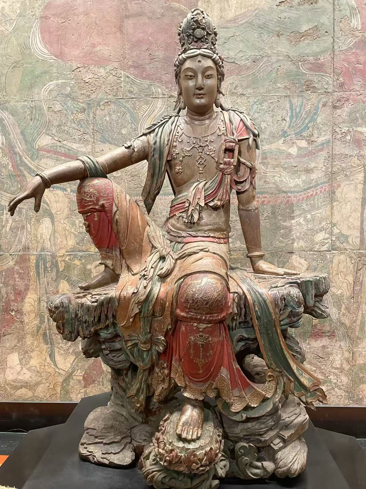

MUSEUM NOTES / CHINESE BUDDHIST ART
中国佛教艺术
造像、经卷与绘画，
把不同博物馆里的作品慢慢放在一起。
BROWSE BY MATERIAL
从材料开始
先从中国佛教造像整理起。按主要结构与工艺归类，每件作品保留展签上的完整材料说明。
浏览全部 36 件造像 →BUDDHIST PAINTING
佛教绘画
壁画、卷轴与幡画，按原来的形制和使用环境整理。
浏览全部 14 件佛教绘画 →READ BY THEME
循着一个问题看

001 / 中国佛教造像
自在之姿
从水月观音出发，观看木雕、石雕、铜像与漆塑中的姿态、色彩和时间。
阅读这一辑 →